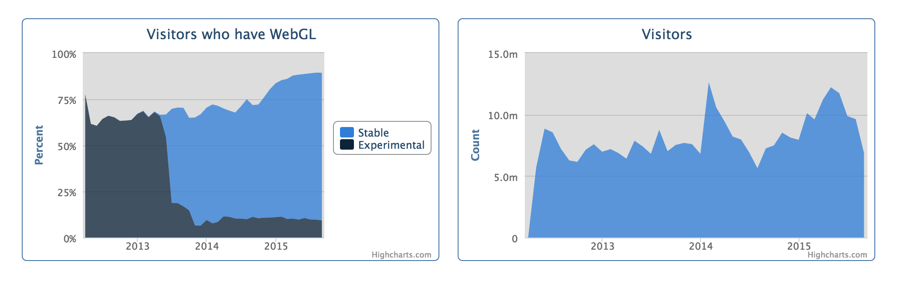
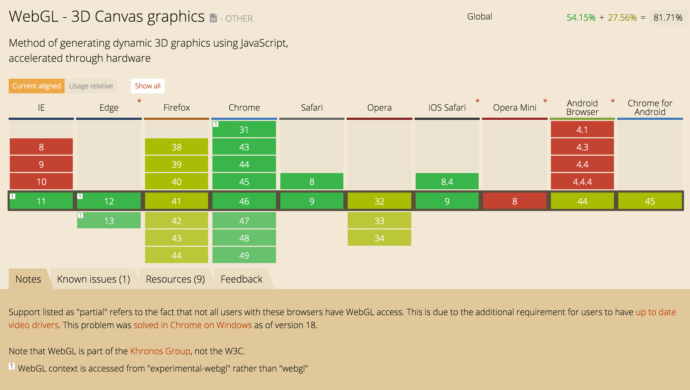
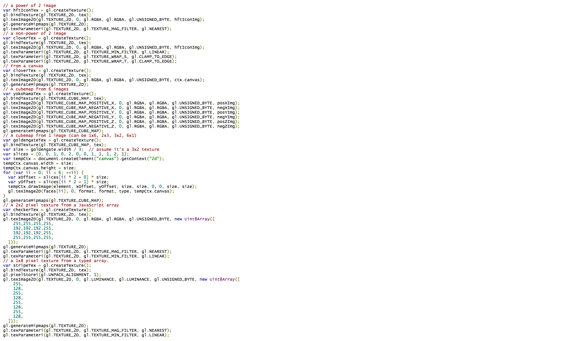

(Use Up/Down arrow keys to navigate.)
WebGL
Graphics programming for the web
(Use Up/Down arrow keys to navigate.)
WebGL
Graphics programming for the web
WebGL is a Javascript API for rendering interactive 3D computer graphics and 2D graphics within any compatible web browser without the use of plug-ins. It is designed and maintained by Khronos Group.

webglstats.com

caniuse.com
Try yours: get.webgl.org
| There are |
| >1 billion |
| devices that support WebGL. |
WebGL Javascript API ...
... is very verbose

WebGL Libraries
three.js (threejs.org)
sceneJS (scenejs.org)
Babylon.js (babylonjs.com)
CopperLicht (ambiera.com/copperlicht)
TWGL (twgljs.org)
... and more
<script src="https://cdnjs.cloudflare.com/ajax/libs/three.js/r72/three.min.js">
three.js
Let's dive in.
Just a few steps to get started.
var renderer = new THREE.WebGLRenderer(); var width = window.innerWidth; var height = window.innerHeight; renderer.setSize( width, height ); document.body.appendChild( renderer.domElement );
1. Setup render context
var scene = new THREE.Scene();
var geometry = new THREE.SphereGeometry( 1, 32, 32 );
var material = new THREE.MeshBasicMaterial( { color: 0xd5631d } );
var object = new THREE.Mesh( geometry, material );
scene.add( object );
var camera = new THREE.PerspectiveCamera( 55, width / height, 1, 1000 );
camera.position.z = 3;
2. Create geometry and camera
function draw () {
window.requestAnimationFrame( draw );
renderer.render( scene, camera );
}
draw();
3. Start rendering
var light = new THREE.PointLight( 0xffffff, 1 ); light.position.set( 10, 10, 10 ); scene.add( light );
var material = new THREE.MeshPhongMaterial( { color: 0xd5631d } );
4. Light up the world
var geometry = new THREE.SphereGeometry( 1, 32, 32 );
var material = new THREE.MeshLambertMaterial({
map: THREE.ImageUtils.loadTexture('img/mars_1k_color.jpg')
});
var object = new THREE.Mesh( geometry, material );
scene.add( object );
5. Apply texture mapping
But what about shaders?
ThreeJS makes them easy to use!
var vertexShader = document.getElementById('basic_shader_vertex').textContent;
var fragmentShader = document.getElementById('basic_shader_fragment').textContent;
var material = new THREE.ShaderMaterial({
uniforms: {
map: { type: 't', value: THREE.ImageUtils.loadTexture('img/mars_1k_color.jpg') }
},
vertexShader: vertexShader,
fragmentShader: fragmentShader
});
1. THREE.ShaderMaterial
varying vec2 vUv;
void main() {
vUv = uv;
gl_Position = projectionMatrix * modelViewMatrix * vec4(position, 1.0);
}
2. Texturing (vertex)
uniform sampler2D map;
varying vec2 vUv;
void main() {
gl_FragColor = texture2D(map, vUv);
}
3. Texturing (fragment)
var material = new THREE.ShaderMaterial({
uniforms: {
map: { type: 't', value: THREE.ImageUtils.loadTexture('img/mars_1k_color.jpg') },
light: { type: 'v3', value: new THREE.Vector3(10, 10, 10) }
},
vertexShader: vertexShader,
fragmentShader: fragmentShader
});
4. Add a light source
varying vec2 vUv;
varying vec3 vNormal;
void main() {
vUv = uv;
vNormal = normalize(normalMatrix * normal);
gl_Position = projectionMatrix * modelViewMatrix * vec4(position, 1.0);
}
5. Surface normals (vertex)
uniform sampler2D map;
uniform vec3 light;
varying vec2 vUv;
varying vec3 vNormal;
void main() {
// Light up Mars
vec4 lightPos = viewMatrix * vec4(light, 1.0);
float illumination = dot( vNormal, normalize(lightPos.xyz) );
vec4 color = texture2D(map, vUv) * clamp(illumination, 0.0, 1.0);
// Red planet glow
float viewFactor = dot( vNormal, vec3(0.0, 0.0, 1.0) );
vec3 glow = vec3(0.9, 0.1, 0.2) * (1.0 - viewFactor);
gl_FragColor = 0.25 * vec4(glow, 1.0) + color;
}
6. Lighting (fragment)
WebGL GLSL (OpenGL ES 2.0) pre-defined variables
ThreeJS pre-defined variables
Shaders are powerful.
Use 'em. Love 'em. Embrace 'em.
Shadertoy
What is WebGL being used for?
Real-world applications today.

Web + VR = WebVR
mozvr.com/projects/polarsea
Games
timeshift165.com
Scientific Visualisation
3D printing
thingiverse.com/thing:342381
Lego
buildwithchrome.com
Takeaways
Upcoming: WebGL 2.0 Draft
Slides: filonik.github.io/bdva2015/slides/webgl/
For more:
@Xavier_Ho